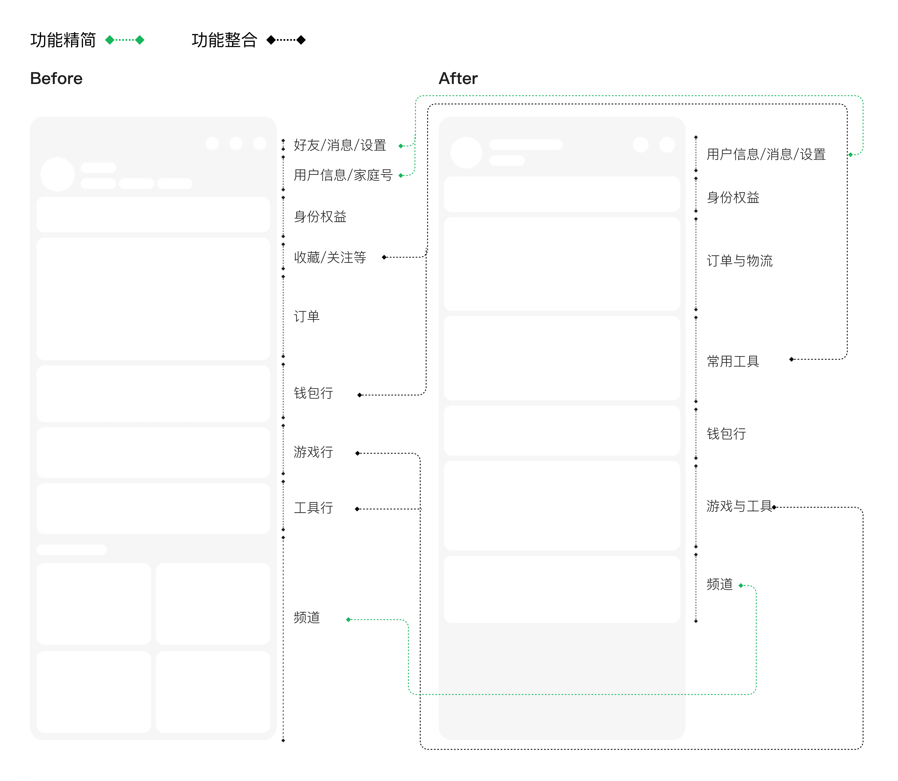
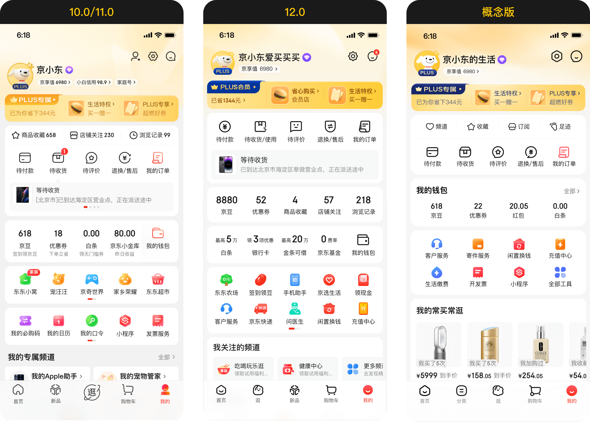
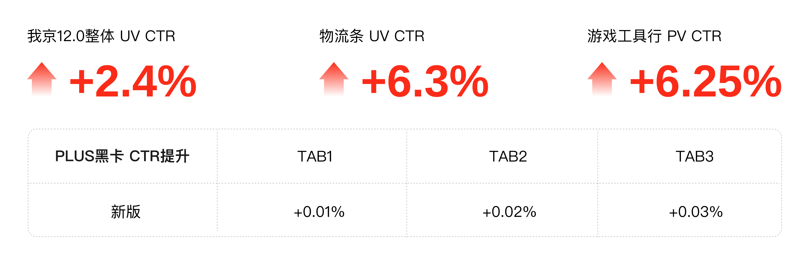
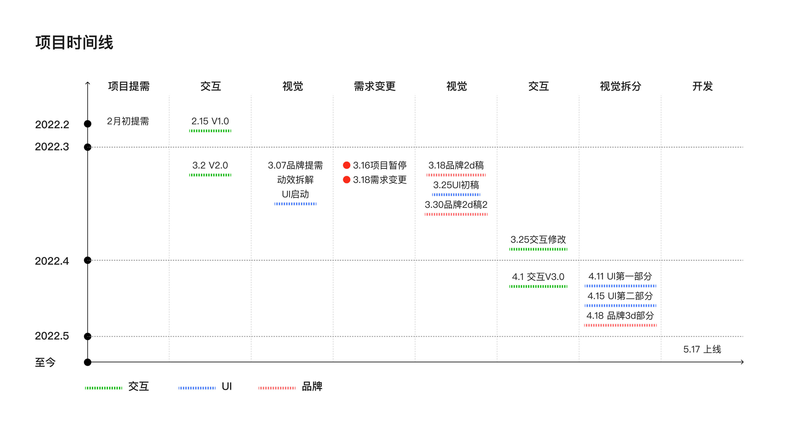
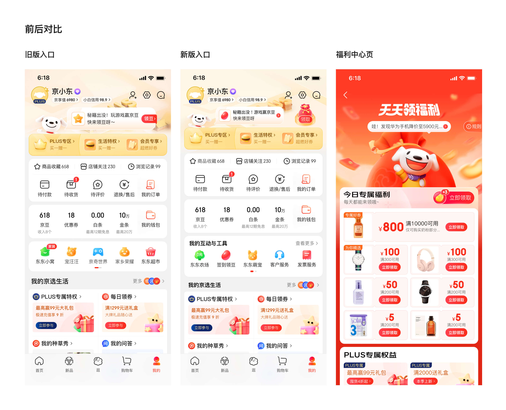
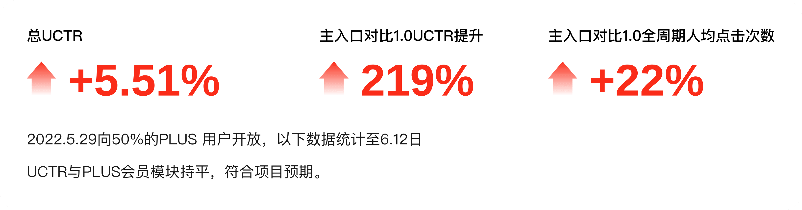

项目概览
时间与类型
我的角色
改版项目视觉设计师之一，我京模块主视觉设计师，团队动画/3d元素设计师。
项目背景
APP12.0是年度改版重要项目，我京作为其中的重点模块跟随主项目升级改造。

改版项目视觉设计师之一，我京模块主视觉设计师，团队动画/3d元素设计师。
APP12.0是年度改版重要项目，我京作为其中的重点模块跟随主项目升级改造。
动线：用户常用功能工具不够聚合
屏效：功能太多太复杂，屏效略低
会员：会员板块视觉不突出，品牌力传达不足
视觉：视觉陈旧，细小文字多，层级嵌套
在保留用户熟悉操作习惯的基础上，优化页面结构与视觉表达，让页面更清晰、更高效，也更符合京东 12.0 的整体升级方向。


探索：围绕「简单、低价、至真至简」的设计方向，与12.0至真至简的设计语言，探索页面卡片、图标、色彩、会员氛围和整体视觉节奏。
结构：参与梳理「我的京东」核心功能区，包括用户信息、订单、资产、权益、常用工具和推荐内容等模块。
视觉：负责「我的京东」页面主视觉方案设计，优化顶部会员区、功能入口、钱包资产、工具区和底部内容模块。
落地：与产品、运营和研发团队协作，完成方案评审、设计走查、上线跟进和数据复盘。

项目主设计师
3d和动画设计师
围绕「我的京东」模块新增福利运营能力，通过“小福星”设计，将福利内容聚合展示。

原小福星项目通过大气泡推送权益，用户对福利供给的感知较弱，数据表现不佳。
原形式占据高度加大，屏效不高。
原形式不能承载新整合的各项权益。
在不破坏我京原有结构的基础上，新增更醒目的福利入口与承接页面，让用户更容易发现、领取和回看福利，同时提升我京模块的营销效率。

设计我京首页中的小福星福利入口，优化头部区域高度、背景氛围、福袋入口和动效表现，提升点击效率。
参与「天天领福利」页面设计，完成优惠券、PLUS 权益、京豆等福利内容的视觉整合，让不同类型福利具备统一的领取体验。和研发团队协作，完成方案评审、设计走查、上线跟进和数据复盘。
后期维护根据业务需求继续维护福袋动效、京豆动效、领取记录入口、banner 与商品楼层等后续迭代内容。
